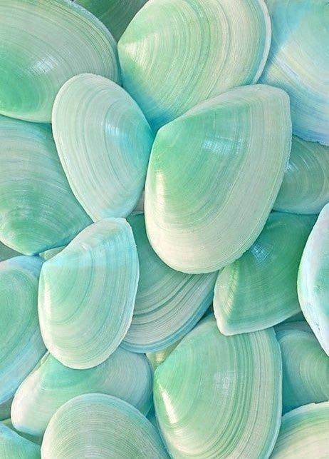
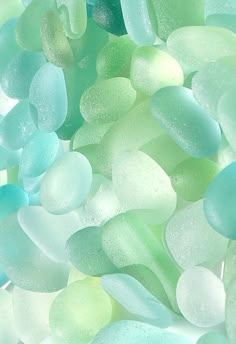

투명하고 맑은 피부 상담 경험
GmarketSans의 둥글고 또렷한 핵심 문장과 Pretendard의 안정적인 본문 가독성을 결합한 뭐바를래 신규 디자인 시스템입니다.

컬러 토큰
Aqua 300에서 Mint 300으로 이어지는 맑은 블렌드를 중심으로 구성합니다. 진한 틸은 본문 강조가 아니라 대비가 꼭 필요한 곳에만 제한합니다.
#fbfffc#ddfbf4#95e9df#b2efcc#c9f4b9#18312eGmarketSans + Pretendard 타입 시스템
핵심 브랜드 문장과 로고는 GmarketSans 500을 사용하고, 본문·상품명·버튼·내비게이션은 Pretendard를 사용합니다. KT 가이드처럼 역할을 분리해 읽는 흐름을 안정적으로 만듭니다.
로고, 히어로 핵심 문장, 브랜드를 기억시켜야 하는 짧은 문장에만 씁니다. 긴 본문에는 사용하지 않습니다.
상품 정보, 랭킹, 버튼, 내비게이션, 설명 문장에 사용합니다. 커머스 화면의 기본 읽기 폰트입니다.
Navigation 400, Body 500, Heading 600을 기본으로 합니다. GmarketSans는 무겁게 보이지 않도록 500을 기본으로 둡니다.
Line-height 140%
Line-height 140%
Line-height 140%
Line-height 140%
Line-height 140%
Line-height 120%
Line-height 120%
Line-height 120%
Line-height 120%
Line-height 120%
Line-height 120%
타이틀 하나에 굵기, 색상, 효과를 여러 개 겹치지 않습니다. 크기와 위치만으로 먼저 읽을 내용을 분명하게 만듭니다.
아쿠아 포인트 컬러는 CTA, 선택 상태, 아주 중요한 상태값에만 씁니다. 강조가 많아지면 강조가 사라진다는 기준으로 제한합니다.
고객이 반드시 읽어야 하는 정보는 크기, 굵기, 위치 중 하나로만 강하게 만듭니다. 보조 정보는 작고 차분한 색으로 낮춥니다.
GmarketSans는 로고와 핵심 문장, Pretendard는 본문과 UI에만 사용합니다. 화면마다 폰트 역할을 바꾸지 않습니다.
Navigation 400, Body 500, Heading 600을 기본으로 합니다. 실제 커머스 화면에서는 300과 700을 사용하지 않습니다.
본문은 14px 이상, 주요 입력과 버튼은 48px 안팎의 높이를 확보합니다. 실제 모바일 폭에서 줄바꿈과 클릭 오류를 확인합니다.
필기체나 장식 폰트보다 고딕 계열의 두께, 컬러, 여백, 계층 구조로 간결하고 직관적인 UI를 만듭니다.
간격과 컨트롤 규격
마진은 16, 20, 24를 반복해 학습 비용을 줄입니다. 버튼, 셀렉트, 인풋은 같은 높이 체계를 공유합니다.
카드 내부, 섹션 헤더, 그룹 간격은 세 값 안에서 해결합니다.
버튼, 셀렉트 박스, 인풋 박스는 높이를 공유해 화면 리듬을 맞춥니다.
큰 제목은 120%, 본문과 설명은 140%를 기본으로 사용합니다.
화해식 상품 정보 계층
화해처럼 랭킹과 상품을 빠르게 훑는 화면에서는 굵기보다 색상 대비, 크기, 반복 구조로 읽는 순서를 만듭니다.
24px / 600 / #222222. 사용자가 먼저 읽어야 하는 랭킹 단위입니다. 포인트 컬러는 제목 전체가 아니라 보조 라벨에만 씁니다.
14px / 500 / #55585D. 제목 아래에서 맥락만 짧게 보충합니다. 흐린 Light 두께는 사용하지 않습니다.
14px / 500 / #222222. 카드 안에서 가장 중요한 텍스트이며 2줄까지만 노출합니다.
12px / 500 / #737B7A. 브랜드, 랭킹 출처, 리뷰 수처럼 보조 정보에 사용합니다.
18px / 600 / #222222. 할인율만 코랄 컬러로 제한해 가격 정보의 집중도를 유지합니다.
Aqua 300 → Mint 300. CTA, 선택 상태, 링크에만 사용합니다. 긴 문장은 짙은 텍스트로 두고 포인트는 맑은 블렌드로 제한합니다.
사진과 질감
배경 이미지는 제품보다 감정의 바탕입니다. 과한 장식 대신 투명한 조개, 해변 유리, 물빛 반사처럼 깨끗한 피부 컨디션을 연상시키는 이미지를 사용합니다.
조개껍질의 층과 결은 성분 분석의 레이어감을 표현합니다. 히어로나 섹션 상단 이미지에 적합합니다.

반투명하고 부드러운 색 흐름은 추천 카드, 로딩, 빈 상태의 배경 텍스처로 사용합니다.
핵심 컴포넌트
피부 상담 서비스의 첫 화면에 필요한 선택, 입력, 실행 컴포넌트를 우선 정의했습니다.
48px height · Aqua 300 · 600
selected state keeps context visible
glass surface · clear focus ring
Seamless Flow 원칙
KT UX Design System의 Seamless Flow 방향처럼, 서비스 경험을 하나의 흐름으로 연결합니다. 피부 상담에서는 입력의 맥락이 추천까지 유지되어야 합니다.
큰 제목은 한 가지 질문만 던집니다.
피부 타입과 민감도를 먼저 고릅니다.
자연어 고민을 짧게 받습니다.
필요 효능과 성분을 보여줍니다.
상품 랭킹으로 끊김 없이 이어집니다.
사용 규칙
Do
- 선택한 피부 타입과 민감도를 결과 화면까지 유지합니다.
- 카드는 흰색 불투명 면보다 반투명 표면과 얇은 선을 우선 사용합니다.
- 로딩은 짧고 명확하게, 분석 중인 단계를 보여줍니다.
- 사진은 맑은 민트, 아쿠아, 펄 톤을 사용합니다.
Don't
- 검은 배경을 넓게 쓰지 않습니다.
- 한 화면에서 너무 많은 설명 문장을 노출하지 않습니다.
- 결과 화면에서 사용자의 입력 맥락을 끊지 않습니다.
- 장식 이미지를 어둡게 블러 처리하지 않습니다.
@import './aqua-glass-system.css';
.brand-copy,
.hero h1 {
font-family: var(--font-display);
font-weight: 500;
}
.main-content {
background: #ffffff;
}
.product-name {
font-family: var(--font-ui);
font-size: 14px;
font-weight: 500;
color: #222222;
line-height: 140%;
}Reference: KT UX Design System, Seamless Flow, KT UX Design System, Typography, Hwahae. KT 가이드는 Pretendard 역할 분리와 서비스 흐름을, 화해는 랭킹형 커머스의 텍스트 색상·굵기·반복 계층을 참고했습니다.